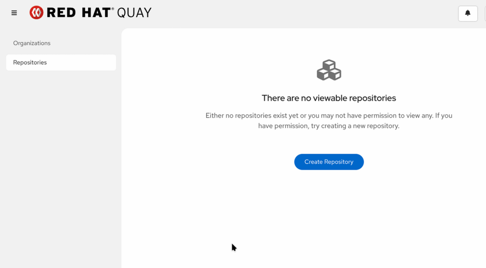

Image Distribution and Replication
In modern enterprise architectures, container registries must serve workloads distributed across multiple cloud regions, remote datacenters, and edge environments. Red Hat Quay offers robust mechanisms for image replication, distribution, and caching to guarantee high availability, minimize pull latencies, and maintain compliance across environments.
Whether you need to synchronize repositories between independent registries, implement a Hub-and-Spoke distribution model, configure geo-distributed storage, or cache upstream images locally, Red Hat Quay provides flexible controls to manage container image movement efficiently.
Creating a Mirrored Repository
Repository Mirroring allows Red Hat Quay to automatically pull and synchronize container images from an external public registry (such as Docker Hub or Quay.io) or a remote internal registry.
In this exercise, you will create a repository configured to mirror specific tags of the official httpd image from Docker Hub.
-
Navigate to Repositories and click Create New Repository.

-
Configure the new repository settings:
-
Organization: Select
olleb(or your target organization). -
Repository Name: Enter
httpd-mirror. -
Repository Visibility: Select Public.

-
-
Click Create.
-
Click the newly created repository
olleb/httpd-mirror, select Settings. -
Locate the Repository State section and change the state to Mirror.

-
Click Submit.
-
Select Mirroring from the top navigation menu and fill in the following parameters:
-
Registry Location:
httpd -
Tags:
2.4.53, 2.4.48* -
Start Date: Select the current date and time.
-
Sync Interval:
1 minute(Set short for demo purposes). -
Skopeo Timeout Interval:
300 -
Robot User: Select Create robot account and set the name.

-

-
Click Next four times and Review and Finish.
-
(Note: Creating it directly from this Mirroring screen automatically grants this local robot the Write permissions needed to save images into the repository).

-
-
Click Enable Mirror to save the configuration and click Sync Now to trigger the synchronization schedule.
After enabling mirroring, you can monitor the synchronization progress and inspect the mirrored repository details through the Logs, Tag History, and Tags views.


Configuring Proxy Cache
While Repository Mirroring is a proactive approach (images are synced on a scheduled basis regardless of whether they are needed right now), the Proxy Cache feature is a reactive, pull-through caching mechanism.
When a user or a Kubernetes node requests an image through a Proxy Cache organization, Quay checks if it already has a local copy. If not, it seamlessly fetches the image from the upstream registry, serves it to the user, and keeps a cached copy for future requests based on a configurable Time-To-Live (TTL).
Enabling the Proxy Cache Feature
By default, the Quay Operator may not enable the Proxy Cache feature. We must inject the FEATURE_PROXY_CACHE flag into the Quay configuration secret before configuring it in the UI.
-
First, locate your Quay configuration secret in the quay-workshop namespace:
oc get secret -n quay-workshop | grep config-bundleNote the exact name of the secret (e.g.,
registry-config-bundle-xxxx). -
Extract the current
config.yaml, append the feature flag, and update the secret:# 1. Extract the file oc get secret <your-config-secret-name> -n quay-workshop -o jsonpath="{.data['config\.yaml']}" | base64 --decode > config.yaml # 2. Append the feature flag echo "FEATURE_PROXY_CACHE: true" >> config.yaml # 3. Update the secret in OpenShift oc set data secret/<your-config-secret-name> --from-file=config.yaml=config.yaml -n quay-workshop -
Watch the Quay pods recreate to apply the new configuration. Wait until the new
quay-apppods are in aRunningstate:oc get pods -n quay-workshop -w
Configuring the Proxy Cache Organization
Now that the feature is enabled globally, we can configure an Organization to act as our cache for a public upstream registry.
-
Log in to your quay-registry UI as an administrator.
-
In the left navigation pane, click Organizations, then click Create organization.
-
Name it
cache_quayioand click Create. -
Navigate into the newly created
cache_quayioorganization. -
On the top menu, select Settings.
-
Scroll down to the newly available Proxy Cache section.
-
Fill in the upstream registry details:
-
Remote Registry:
quay.io. -
Note: For a public registry like
quay.io, leave the credentials blank.
-
-
Click Save to apply the configuration.
Testing the Pull-Through Cache
Now, let’s simulate a developer or an OpenShift node pulling an image that doesn’t exist in our registry yet.
-
Open your terminal and attempt to pull an image, but prefix the image path with your Quay URL and the proxy organization name.
For example, to pull
quay.io/argoproj/argocd:latestthrough our cache, run:QUAY_HOSTNAME=$(oc get route quay-registry-quay -n quay-workshop -o jsonpath='{.spec.host}') podman pull $QUAY_HOSTNAME/cache_quayio/argoproj/argocd:latestNotice that the first pull might take a few seconds as your registry is reaching out to the public
quay.ioregistry, downloading the layers, and storing them. -
Delete the local image from your machine to simulate a fresh pull (or move to a different node):
podman rmi $QUAY_HOSTNAME/cache_quayio/argoproj/argocd:latest -
Pull the image again:
podman pull $QUAY_HOSTNAME/cache_quayio/argoproj/argocd:latestThis second pull should be noticeably faster because the image is now being served directly from your local Quay Spoke cache.
Verifying the Cache in the UI
-
Go back to the quay-registry UI and navigate to the
cache_quayioorganization. -
Click on Repositories in the left menu.
-
You will see that a new repository named
cache_quayio/argoproj/argocdhas been automatically created. -
If you click on the repository and go to the Tags tab, you will see the
latesttag, along with a special icon or label indicating that this tag is heavily managed by the Proxy Cache and will expire based on your TTL settings.
Automating Image Consumption with Quay Bridge Operator
While Repository Mirroring and Proxy Cache solve the problem of image availability (ensuring the right images are physically present in the local registry), administrators still face the challenge of image consumption. In a large-scale Kubernetes or multi-tenant edge environment, manually creating Robot Accounts in the registry and distributing their corresponding credentials (Secrets) to dozens of OpenShift namespaces is unmanageable, prone to human error, and insecure.
To solve this, Red Hat provides the Quay Bridge Operator (QBO). When deployed on the compute cluster (the OpenShift cluster pulling the images), QBO acts as a bridge. Whenever a developer creates a new namespace, QBO automatically:
-
Connects to the registry.
-
Creates an Organization mapped to the namespace.
-
Provisions a Robot Account with the correct permissions.
-
Injects the authentication Secret directly into the OpenShift namespace.
Generating an OAuth Token on the Quay Registry
To allow the OpenShift cluster to configure the Quay Registry automatically, we must provide QBO with an administrative token. In Red Hat Quay, OAuth tokens must belong to an Organization.
Note: Although we already have the internal-apps organization, it is a best practice to create a dedicated administrative organization for cluster integrations. This isolates infrastructure credentials from application workloads.
-
Log in to your registry UI as your superuser/administrator.
-
In the left navigation pane, click Organizations, then click the Create organization button.
-
Name it
openshift-systemand click Create. -
Once inside the
openshift-systemorganization view, select OAuth Applications from the top menu. -
Click Create new application, name it
quay-bridge-operator, and save it. -
Click on the newly created application name. You will see a section stating that the generated token will act on behalf of your user.
-
Select the necessary permissions by checking the boxes. Crucial: You must select Super User Access, Administer Organization, and most importantly, Administer User. The 'Administer User' scope is what grants the Operator the rights to create entirely new organizations on your behalf across the registry.
-
Scroll down to the bottom of the permissions list and click Generate Token.
-
Authorize the application if prompted, and copy the provided alphanumeric token string to your clipboard.
Configuring the QuayIntegration
Assuming the Quay Bridge Operator is already installed from the OperatorHub, we now configure it to point to our registry.
-
First, retrieve your main Quay URL so you can use it in the configuration:
export QUAY_HOSTNAME=$(oc get route quay-registry -n quay-workshop -o jsonpath='{.spec.host}') echo $QUAY_HOSTNAME -
Create a Secret in OpenShift containing the OAuth token:
apiVersion: v1 kind: Secret metadata: name: quay-token namespace: openshift-operators type: Opaque stringData: token: "<OAUTH_TOKEN>" -
Create the
QuayIntegrationCustom Resource. This tells the operator which Quay registry to talk to. Replace <YOUR_QUAY_URL_HERE> with the output from the echo command above:apiVersion: quay.redhat.com/v1 kind: QuayIntegration metadata: name: registry-integration spec: clusterID: "edge-compute-01" credentialsSecret: name: quay-token namespace: openshift-operators quayHostname: <YOUR_QUAY_URL_HERE> insecureRegistry: falseNote: Apply both YAMLs using the OpenShift Console or
oc apply -f.
Verifying the Automated Synchronization
Now we simulate a developer requesting a new workspace on the edge cluster.
-
From your terminal, create a brand new, empty OpenShift project:
oc new-project edge-frontend-dev -
Check the Secrets in this new namespace:
oc get secrets -n edge-frontend-devNotice that QBO has instantly injected three new pull secrets (e.g.,
default-quay-edge-compute-01,builder-quay-edge-compute-01, anddeployer-quay-edge-compute-01). It has also automatically patched the OpenShift ServiceAccounts to use them. -
Switch back to the quay-registry UI and navigate to the Organizations list.
You will see
edge-compute-01_edge-frontend-devalongside several other organizations. Let’s understand why.
|
Understanding QBO’s Automatic Synchronization: When the Quay Bridge Operator connects to the registry, it syncs the OpenShift cluster’s state with the Quay registry, both proactively and retroactively.
|
Testing the End-to-End Image Pull
To prove that our automation works, we will push a sample image to the newly created Organization in the registry and deploy it to our OpenShift namespace.
-
From your terminal, pull a lightweight generic image (like
busybox) and tag it for your registry, specifically targeting the Organization QBO just created:podman pull busybox:latest podman tag busybox:latest QUAY_HOSTNAME/edge-compute-01_edge-frontend-dev/busybox:latest -
Log in to the registry from your CLI. You can use your admin user credentials (or extract the
builderrobot credentials):podman login QUAY_HOSTNAME -
Push the image to the registry:
podman push QUAY_HOSTNAME/edge-compute-01_edge-frontend-dev/busybox:latest -
Now, deploy a pod in OpenShift using that exact image. Notice that we do not specify any imagePullSecrets in this command:
oc run edge-test-pod --image=QUAY_HOSTNAME/edge-compute-01_edge-frontend-dev/busybox:latest -n edge-frontend-dev -
Check the pod’s status to verify the image was pulled successfully:
oc get pods -n edge-frontend-devYou should see the pod in a
Runningstate. If you inspect the pod’s events (oc describe pod edge-test-pod), you will see that OpenShift successfully authenticated against the registry using the pull secret that QBO automatically attached to thedefaultServiceAccount.
Architecture: Hub and Spoke Topologies
In distributed environments—such as hybrid clouds, multi-datacenter deployments, or edge computing—transferring container images directly from a single central registry can introduce high network latency, bandwidth bottlenecks, and single points of failure.
To address these challenges, Red Hat Quay supports a Hub and Spoke distribution pattern:
-
Hub Registry (Central): Serves as the primary source of truth. Developers, CI/CD pipelines, and automated builds push images here. It centralizes security scanning, governance, and access policies.
-
Spoke Registries (Regional/Remote): Deployed closer to compute workloads (such as regional cloud clusters, local datacenters, or remote edge sites). Spoke registries pull and synchronize required repositories from the Hub.
Benefits of Hub and Spoke
-
Reduced Latency: Applications and OpenShift nodes pull images locally from their designated Spoke registry, significantly speeding up container deployments.
-
Bandwidth Optimization: Images are transferred once over the WAN from the Hub to the Spoke, rather than being pulled individually by dozens or hundreds of worker nodes.
-
High Availability & Resilience: If the network link between a remote site and the central Hub fails, local workloads can continue pulling images without disruption from their regional Spoke registry.
Multi-Registry Architecture
To demonstrate this capability without the complexity of managing multiple physical clusters, our lab environment uses two fully isolated Red Hat Quay instances deployed on the same OpenShift cluster:
-
quay-hub: Deployed in its own namespace, backed by a dedicated PostgreSQL database and its own storage backend (an S3-compatible NooBaa bucket). -
quay-spoke: Deployed in a separate namespace with completely independent database and storage resources (a separate NooBaa bucket).
Although both registries run on the same infrastructure for demonstration purposes, they communicate strictly over HTTPS via distinct OpenShift Routes (quay-hub.apps… and quay-spoke.apps…). This mirrors the exact network topology and authentication flow of a multi-site production environment.
Deploying the Hub and Spoke Registries
With NooBaa configured earlier in this workshop (Prerequisites > Object Storage Options > Option A: OpenShift Data Foundation (MCG)), we can now deploy our Quay instances. The Quay Operator natively integrates with NooBaa; when the objectstorage component is set to managed: true, the Operator automatically creates independent ObjectBucketClaims (OBCs) for each registry.
|
Resource Optimization for Lab Environments We do this intentionally to minimize the resource footprint on the OpenShift cluster, as deploying two complete registries (Hub and Spoke) can be resource-intensive. In a real-world production environment, you should remove these limits, enable the HPA, and deploy multiple replicas to ensure High Availability (HA) and performance at scale. |
Apply the following manifests to deploy both environments:
Hub Registry Deployment:
apiVersion: v1
kind: Namespace
metadata:
name: quay-hub-onprem
---
apiVersion: quay.redhat.com/v1
kind: QuayRegistry
metadata:
name: quay-hub
namespace: quay-hub-onprem
spec:
components:
- kind: quay
managed: true
overrides:
replicas: 1
resources:
requests:
cpu: 100m
memory: 512Mi
- kind: clair
managed: true
overrides:
replicas: 1
resources:
requests:
cpu: 100m
memory: 512Mi
- kind: mirror
managed: true
overrides:
replicas: 1
resources:
requests:
cpu: 100m
memory: 512Mi
- kind: postgres
managed: true
- kind: clairpostgres
managed: true
- kind: redis
managed: true
- kind: objectstorage
managed: true
- kind: route
managed: true
- kind: tls
managed: true
- kind: horizontalpodautoscaler
managed: falseSpoke Registry Deployment:
apiVersion: v1
kind: Namespace
metadata:
name: quay-spoke-aws
---
apiVersion: quay.redhat.com/v1
kind: QuayRegistry
metadata:
name: quay-spoke
namespace: quay-spoke-aws
spec:
components:
- kind: quay
managed: true
overrides:
replicas: 1
resources:
requests:
cpu: 100m
memory: 512Mi
- kind: clair
managed: true
overrides:
replicas: 1
resources:
requests:
cpu: 100m
memory: 512Mi
- kind: mirror
managed: true
overrides:
replicas: 1
resources:
requests:
cpu: 100m
memory: 512Mi
- kind: postgres
managed: true
- kind: clairpostgres
managed: true
- kind: redis
managed: true
- kind: objectstorage
managed: true
- kind: route
managed: true
- kind: tls
managed: true
- kind: horizontalpodautoscaler
managed: falseOnce the Operator finishes, you will have two distinct Quay routes and independent NooBaa buckets ready for the demo.
Now that both the Hub and Spoke registries are deploying, export their route hostnames to your terminal. We will use these variables to easily interact with both registries in the following steps.
export QUAY_HUB=$(oc get route quay-hub -n quay-hub-onprem -o jsonpath='{.spec.host}')
export QUAY_SPOKE=$(oc get route quay-spoke -n quay-spoke-aws -o jsonpath='{.spec.host}')Wait a few minutes until both Quay instances are fully initialized before proceeding.
Implementing Hub to Spoke Synchronization
In this practical demonstration, we will use Quay’s Repository Mirroring feature to synchronize an internal application from our central Hub to our regional Spoke.
Pushing an Image to the Hub
First, we act as a developer pushing a new application release to the central repository.
-
Log in to the quay-hub UI.
-
Create a new Organization named
internal-apps. -
Inside the organization, create a new
Privaterepository namedfrontend-ui. -
From your terminal, tag and push an image to this new Hub repository:
podman login $QUAY_HUB podman pull docker.io/library/nginx:alpine podman tag docker.io/library/nginx:alpine $QUAY_HUB/internal-apps/frontend-ui:v1.0 podman push $QUAY_HUB/internal-apps/frontend-ui:v1.0
Generating Credentials on the Hub
Because the frontend-ui repository is private, the Spoke registry needs authentication credentials to read from it.
-
Still in the quay-hub UI, navigate to the
internal-appsorganization settings. -
Click the Robot Accounts tab and create a new robot named
spoke_sync. -
Crucial Step: Grant this robot account Read access to the
frontend-uirepository. If you skip this, the Spoke will be denied access during synchronization. -
Click on the newly created robot account to view its credentials. Copy the Username (e.g.,
internal-apps+spoke-sync) and Token (password).
Configuring the Mirror on the Spoke
Now, we switch to our regional edge environment to configure the synchronization.
-
Log in to the quay-spoke UI.
-
Create a matching Organization (
internal-apps) and a repository (frontend-ui). -
Navigate to the
Settingsicon of thefrontend-uirepository and change the Repository State to Mirror. -
Click the Mirroring icon and fill in the configuration to point to our Hub:
-
Registry Location:
quay-hub.apps.<your-cluster-domain>/internal-apps/frontend-ui(Do not include https://) -
Tags:
*(This wildcard will sync all tags, such as our v1.0) -
Start Date: Set to the current date and time.
-
Sync Interval:
1 minute(Set short for demo purposes). -
Robot User: Select
Create robot accountfrom the dropdown. A dialog box will appear:-
Name: Type
spoke_writer. -
Click Next until you reach the Default permissions (optional) page.
-
In the Permission drop-down menu, select Write. Click Next.
-
(Note: Even if left as default None, creating the robot directly from this Mirroring screen automatically grants it the Write permissions needed to save images into this specific Spoke repository).
-
Click Review and Finish.
-
-
External Registry Username: Paste the Hub robot username from the Hub Registry (
internal-apps+spoke-sync). -
External Registry Password: Paste the Hub robot token the Hub Registry.
-
-
Click Enable Mirror.
Triggering and Verifying the Spoke
-
In the
quay-spokeMirroring tab, click Sync Now. -
Wait a few moments, then click the Tags icon in the
quay-spokerepository. You should see thev1.0tag successfully replicated from the Hub. -
To verify the Spoke is fully serving the image locally from its own storage backend, pull the image directly from the Spoke registry:
podman pull $QUAY_SPOKE/internal-apps/frontend-ui:v1.0
Understanding Geo-Replication
Red Hat Quay offers a native Geo-Replication feature, which is fundamentally different from the Hub and Spoke (Repository Mirroring) architecture we explored earlier.
While Hub and Spoke consists of completely independent Quay deployments talking to each other, Geo-Replication creates a single, globally distributed Quay registry that spans multiple datacenters.
How Geo-Replication Works Architecturally
In a Geo-Replicated setup, all geographically dispersed Quay instances act as a single logical registry:
-
Shared Global Database: All Quay nodes across all datacenters connect to a single, highly available global database (e.g., PostgreSQL). This means metadata (users, organizations, tags, repository names, RBAC) is instantly consistent across all sites.
-
Localized Storage with Asynchronous Blob Sync: Each datacenter has its own local object storage (e.g., AWS S3, local Ceph, or NooBaa). When a developer pushes an image to Site A, the metadata is written to the global DB, and the image layers (blobs) are written to Site A’s local storage. In the background, Quay automatically synchronizes those blobs to the storage backends of Site B and Site C.
-
Local Pulls: When a user or OpenShift cluster in Site B requests the image, Quay serves the image layers from Site B’s local storage, ensuring low-latency downloads and saving WAN bandwidth.
Geo-Replication vs. Hub & Spoke
Choosing between Geo-Replication and Hub & Spoke depends entirely on your network reliability and edge constraints.
| Geo-Replication | Hub & Spoke (Repository Mirroring) |
|---|---|
Single Control Plane: One UI, one set of credentials, one global database. |
Independent Registries: Each registry has its own DB, UI, and user management. |
Network Dependent: Requires a highly reliable, low-latency connection to the shared global database. If the WAN goes down, remote sites cannot authenticate or push/pull images. |
Air-Gap / Edge Friendly: Spoke registries are fully autonomous. If the network to the Hub drops, the Edge continues to operate normally with its local images. |
All-or-Nothing Sync: Blobs are automatically replicated across all configured storage backends for the entire namespace/registry. |
Granular Control: You can define exactly which specific repositories, tags, or patterns are mirrored to which specific Spoke. |
Use Case: Active-Active datacenters with enterprise-grade WAN links. |
Use Case: Multi-tenant environments, disconnected Edge computing, or low-bandwidth retail locations. |